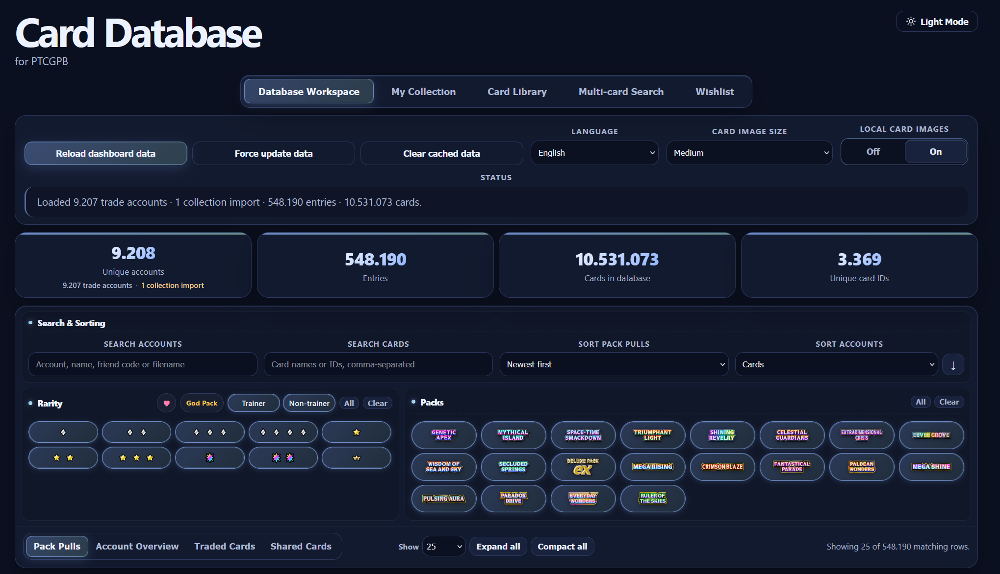
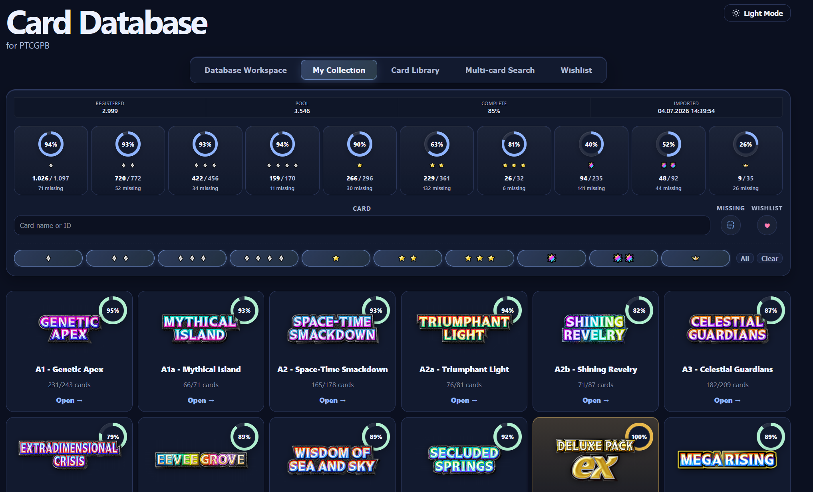
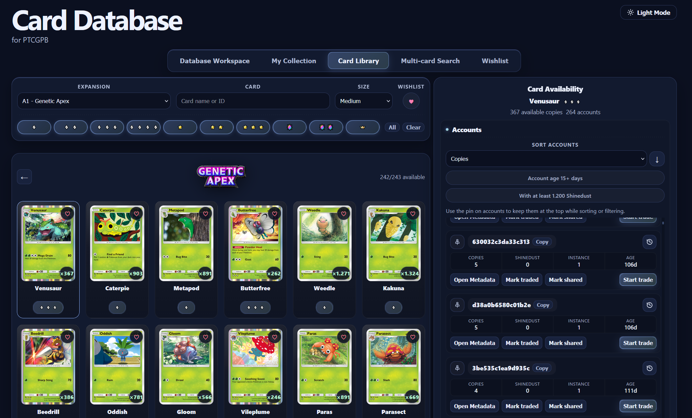
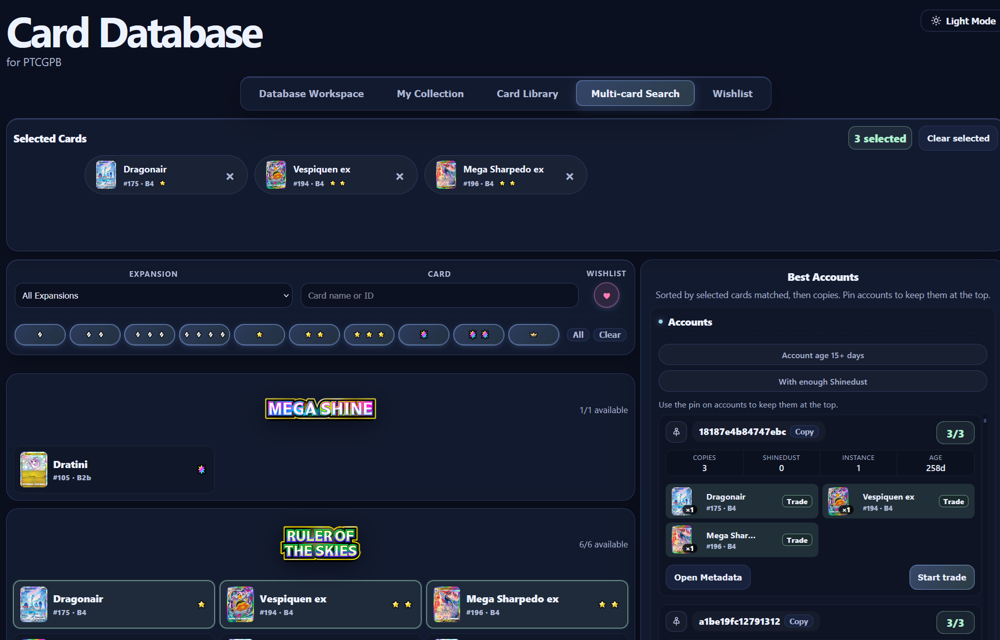
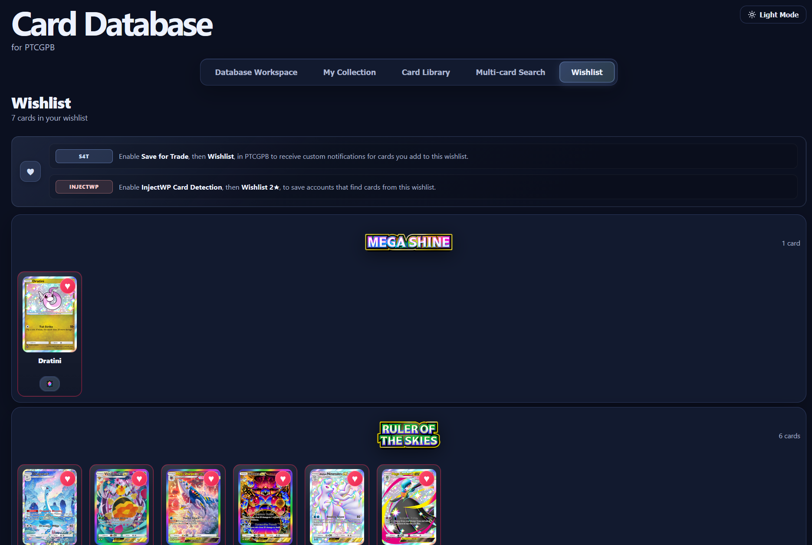

Saved data
Accounts and trading
Understand saved account XML files, distribute them between instances, and configure Save for Trade notifications.
Accounts\Saved and
Accounts\Cards\accounts before using duplicate
removal, batch rename, separation or balancing tools. Do not
share XML attachments publicly.
Account lifecycle
-
Create
Create Bots (13P) produces new accounts and saves them locally on the PC as XML files with associated metadata.
-
Store
Accounts are not stored inside MuMu. Saved XML accounts remain under
Accounts\Saved, while Card Database account data is stored underAccounts\Cards\accounts. -
Distribute
Balance XMLs spreads saved accounts evenly across the numbered instance folders.
-
Inject
An Inject mode temporarily loads a local account into a MuMu instance to open packs, test Wonder Pick eligibility or collect rewards.
-
Rename
Rename Account loads eligible saved XMLs and changes their in-game names. It includes accounts previously marked as used and leaves them available for other modes.
Save for Trade
Save for Trade saves an account and sends a Discord notification when it pulls a selected tradeable rarity. It is available in nearly every mode: Create Bots (13P), Inject 13P+ and Inject Wonderpick 96P+. It does not process pulls in Inject Rewards because that mode does not open packs.
| Setting | Purpose |
|---|---|
| Enable S4T | Turns Save for Trade processing on. |
| Rarity checkboxes | Select any combination of ◆◆◆, ◆◆◆◆, one-star, shiny, two-star Trainer, Rainbow, Full Art, two-star Shiny, Immersive, Crown Rare and Wishlist. |
| Wonder Pick | Only reports packs worth Wonder Picking from the Main. Packs below Min. Cards are skipped. |
| Min. Cards |
Minimum tradeable cards required for a
Wonder Pick report. Valid values are
1 and 2.
|
| Save Screenshots | Keeps generated pack screenshots in the Screenshots folder after sending them. |
| Use Synthetic Screenshots | Builds pack images from card artwork where possible. This is faster and more reliable than a screen capture. |
| Track Shinedust | Reads the shinedust total with OCR and stores it in account metadata. |
Required Discord destination
In Discord Settings, enter the S4T Discord ID and S4T Webhook URL. Enable Send Account XML only in a private, trusted channel.
Card Database
The Card Database is a local browser dashboard built from
the account metadata in
Accounts\Cards\accounts. It lets you inspect
pulls, find accounts that own particular cards, compare
collections and maintain the wishlist used by PTCGPB.
Open it from PTCGPB
-
Launch PTCGPB
Run
PTCGPB.ahkand wait for the main settings window to open. -
Open the dashboard
Click Open Card Database, directly below Save for Trade. PTCGPB starts the local dashboard server and opens the database in your default browser.
-
Keep the server running
Leave the Card Database PowerShell window open while using the page. Closing it stops server-backed actions such as wishlist synchronization, local image caching, opening metadata and starting a trade.
http://127.0.0.1: is served only
on your PC. Its port and version query can change each time,
so use the PTCGPB button instead of bookmarking a specific
address. Account data is loaded automatically by the local
launcher.

Main sections
| Section | What you can do |
|---|---|
| Database Workspace | Review individual pack pulls or aggregated account totals. Search by account, name, friend code, filename, card name or card ID; then filter by pack, rarity, card type, wishlist cards or God Packs. Sort accounts by card count, shinedust or age. |
| My Collection | View imported Main-account collections, completion totals and rarity progress. Search or filter by expansion and rarity, and show only missing or wishlisted cards. To add a collection, click Import Collection on the running Main instance toolbar, then reload the dashboard. |
| Card Library | Browse every known card by expansion, rarity, name or ID. Select a card to see which accounts own it, how many copies are available and its pull history. Sort or filter accounts by copies, pull date, instance, shinedust and trade-ready age; pin useful accounts, open their metadata, mark a card traded or shared, or start a trade. |
| Multi-card Search | Select several cards and rank accounts by how many of them they contain. The results distinguish matches from missing cards and support pinning accounts, marking cards traded or shared, and starting a trade with the selected cards. |
| Wishlist | Review wishlisted cards grouped by expansion and remove them with the heart button. Add cards by clicking the heart in Card Library or Multi-card Search. |



Workspace views and saved actions
- Pack Pulls shows the recorded pull rows; Account Overview combines the records for each account.
- Traded Cards and Shared Cards show cards you marked from Card Library or Multi-card Search. These marks are saved to account metadata and reduce or annotate the available copies shown by the dashboard.
- Start trade asks you to choose a MuMu instance, injects the selected saved account and begins the trade workflow. The button is disabled for non-tradeable cards or accounts that have not reached the required account age.
- Use Expand all, Compact all, the page-size selector and Show more to control large result sets.
Wishlist automation
Wishlist changes are synchronized to
Accounts\Cards\wishlist.json when the local
server is running. In PTCGPB, enable
Save for Trade and its
Wishlist rarity option for custom wishlist
notifications. For Inject Wonderpick, enable
Card Detection and
Wishlist 2★ to save accounts that find a
wishlisted two-star card.

Dashboard controls
- Reload dashboard data rereads the local account data. Use it after the bot records new pulls or after importing a collection.
- Force update data clears cached card definitions, downloads them again and reloads the dashboard. Clear cached data clears only those definitions without reloading.
-
Change the card language, image size and light/dark
theme from the toolbar. When available,
Local card images uses
Helper\CardImageCache, downloads missing images and falls back to the remote artwork source.
Account utilities
| Utility | What it does |
|---|---|
| Balance XMLs | Redistributes saved XML accounts evenly across instance folders. |
| XML Duplicate Remover | Finds duplicate saved XMLs and removes extras. |
| XML Account Manager | Analyzes, batch-renames and separates XMLs using stored JSON metadata and rename templates. |
| Auto Save to Git | Automatically commits XML and JSON account data to the configured local git repository every hour. |
Moving accounts to another installation
Copy both account-data locations into the new bot folder:
-
Accounts\Savedcontains the XML login data required to load the accounts. -
Accounts\Cards\accountscontains metadata, eligibility flags and recorded card history.
XML files remain usable if metadata was not copied, but some information must then be rebuilt. A JSON metadata file cannot replace a missing XML and generally cannot be used to recover the account.
Filenames and pack counts
-
Newer XML files may use an alphanumeric name based on
the account or device identifier. This is expected;
account details live in the matching metadata under
Accounts\Cards\accounts. - Do not manually rename metadata JSON files. Use the supplied account tools when a rename or reorganization is required.
-
A stored pack count of
0can mean that the count is not known yet. PTCGPB may inject the account, determine the real count and update its metadata.
Privacy and recovery
- Treat account XML files, Card Database account data, friend codes, Discord user IDs and webhook URLs as private.
- Never include real webhook URLs in screenshots or support posts.
-
Keep dated backups of both
Accounts\SavedandAccounts\Cards\accounts, ideally on a different drive. - Test account tools on copied data before applying a large batch operation.